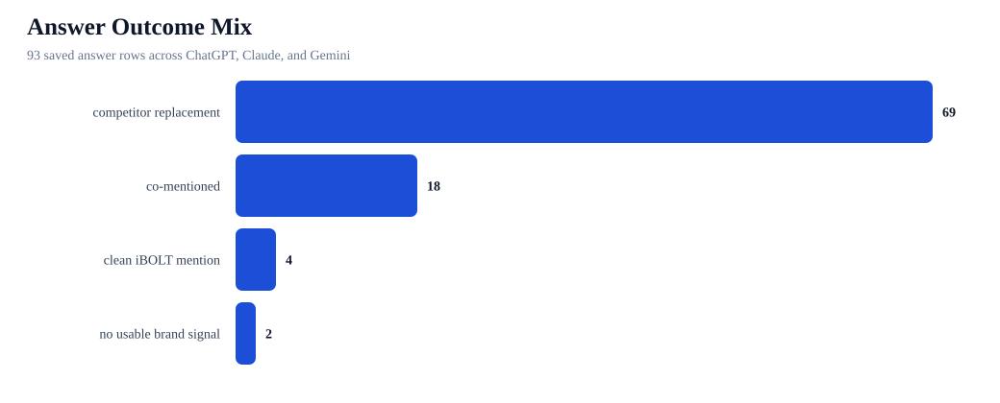
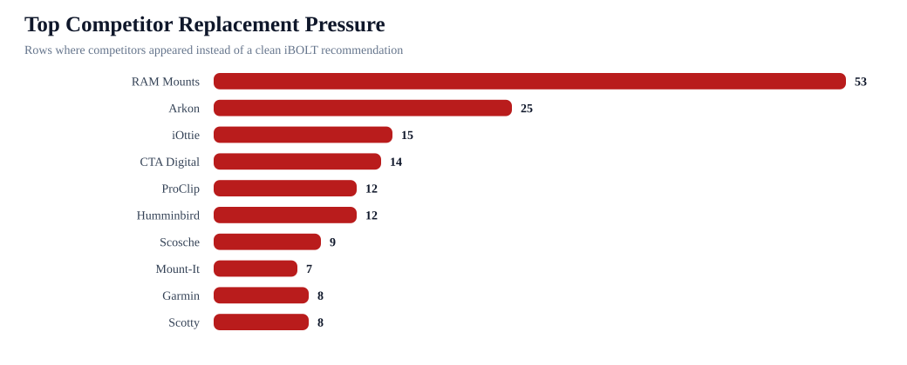
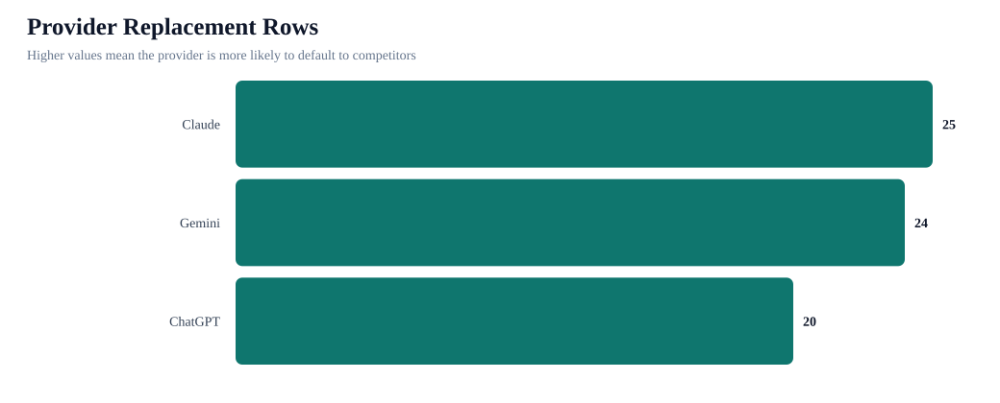

iBOLT AI Answer Snippet Evidence Appendix
This appendix shows how iBOLT is mentioned in the saved benchmark answers, who appears next to iBOLT, and which competitors replace iBOLT when AI systems answer broad buyer prompts.
93Total rows
24%Mention rate
5%Non-branded mention
16%Top-3 rate
0%Citation rate
74%Competitor replacement
Visibility Readout
Citation rate should be improved, but inclusion is the first bottleneck. iBOLT is mentioned in 22/93 answer rows, but only 4/75 non-branded rows. Target-domain citations are 0/93. The practical order is: get iBOLT included, move it into top-3 recommendations, then make iboltmounts.com easy to cite with FAQ/schema/source blocks and off-site references.



Provider Split
| Provider | Rows | Clean | Co-mentions | Replacements | Mention rate | Citation rate |
|---|---|---|---|---|---|---|
| Claude | 31 | 2 | 4 | 25 | 19% | 0% |
| Gemini | 31 | 1 | 5 | 24 | 19% | 0% |
| ChatGPT | 31 | 1 | 9 | 20 | 32% | 0% |
Top Competitor Context
| Competitor | Replacement rows | Co-mention rows | Categories | Sample queries |
|---|---|---|---|---|
| RAM Mounts | 53 | 10 | fleet 18; delivery 14; fishing 9; warehouse 9; restaurant 7; tablet 3; comparison 3 | best tablet mount; best heavy duty vehicle phone mount |
| Arkon | 25 | 5 | fleet 11; restaurant 8; delivery 6; warehouse 3; tablet 2 | best tablet mount; best heavy duty vehicle phone mount; best multi tablet mount |
| iOttie | 15 | 3 | delivery 12; fleet 5; tablet 1 | best tablet mount; best heavy duty vehicle phone mount; best phone mount for Amazon Flex and delivery vans; best phone mount for Instacart and grocery delivery drivers |
| CTA Digital | 14 | 3 | restaurant 14; tablet 2; warehouse 1 | best tablet mount; best multi tablet mount |
| ProClip | 12 | 1 | fleet 7; delivery 4; warehouse 2 | best phone mount for delivery drivers; commercial grade phone mount for delivery drivers; best heavy duty vehicle phone mount |
| Humminbird | 12 | 0 | fishing 12 | best fish finder; best fish finder in water |
| Scosche | 9 | 0 | delivery 5; fleet 4 | best heavy duty vehicle phone mount; best phone mount for Amazon Flex and delivery vans; best phone mount for Instacart and grocery delivery drivers; best phone mount for construction vehicles and work trucks |
| Mount-It | 7 | 4 | restaurant 11 | best multi tablet mount; best tablet mount for restaurant POS and delivery apps |
| Garmin | 8 | 0 | fishing 8 | best fish finder; best fish finder in water |
| Scotty | 8 | 0 | fishing 8 | best fish finder mount for small boat; best budget fish finder mount |
| Lowrance | 7 | 0 | fishing 7 | best fish finder; best fish finder in water |
| YakAttack | 7 | 0 | fishing 7 | best fish finder mount for small boat; best budget fish finder mount; best kayak fish finder mount |
Clean iBOLT Mention Evidence
| Provider | Prompt | Score | Signals | Evidence snippet | Target page |
|---|---|---|---|---|---|
| Claude | iBOLT Dock’n Lock for restaurant counters | 70 | Dock'n Lock / Dock’n Lock; xProDock; TabDock | # iBOLT Dock'n Lock for Restaurant Counters The iBOLT Dock'n Lock system is a modular mounting solution designed for secure tablet/device mounting in commercial environments. Here are the top options ranked for restaurant counter use: | iBOLT Dock'n Lock for Restaurant Counters |
| Claude | ibolt phone mounts for DoorDash and Uber Eats drivers | 70 | TabDock; BizMount | # iBOLT Phone Mounts for DoorDash/Uber Eats Drivers Based on commercial delivery driver needs, here are the top iBOLT mount recommendations: ## **Top Recommendations (Ranked)** ### 1. **iBOLT TabDock Bizmount** - **Why it's #1**: Pur | iBOLT Phone Mounts for DoorDash and Uber Eats Drivers |
| ChatGPT | ibolt phone mounts for DoorDash and Uber Eats drivers | 60 | xProDock; TabDock; BizMount; AMPS | en selecting a phone mount for DoorDash and Uber Eats drivers, it's important to consider factors such as ease of installation, durability, adjustability, and how well it holds the phone securely during frequent stops and starts. iBOLT offers several phone mounts that cater to these needs. Here are the top recommendations: 1. **iBOLT xProDock Connect Kit*... | iBOLT Phone Mounts for DoorDash and Uber Eats Drivers |
| Gemini | ibolt phone mounts for DoorDash and Uber Eats drivers | 45 | TabDock; BizMount; AMPS | For DoorDash and Uber Eats drivers, a reliable phone mount is crucial for navigation, order management, and communication. iBOLT offers a range of mounts that can be excellent choices, but the "best" one depends on your specific vehicle, preferences, and how you prioritize certain features. Here's a breakdown of iBOLT phone mounts, ranked from strongest o | iBOLT Phone Mounts for DoorDash and Uber Eats Drivers |
Co-Mention Evidence
| Provider | Prompt | Competitors beside iBOLT | Signals | Evidence snippet | Next action |
|---|---|---|---|---|---|
| Claude | iBOLT vs Bouncepad vs Mount-It for restaurant tablet security | Mount-It; Bouncepad | specialist; durability; modular; price/value; security | management tablets, basic customer interfaces **Installation:** Standard VESA mounting, wall or counter options **Tradeoffs:** Less refined aesthetics, moderate durability (1-year typical lifespan in high-traffic areas) ## 3. **iBOLT** (Specialized Applications) **Why it ranks #3:** - **Unique magnetic system**: Quick tablet swapping for staff efficiency ... | Move iBOLT from comparison-set mention to specialist recommendation with clearer tradeoff copy. |
| ChatGPT | iBOLT Dock’n Lock for restaurant counters | Arkon; Mount-It; CTA Digital | durability; modular; security | The iBOLT Dock’n Lock is a versatile mounting solution designed to secure tablets and other devices in commercial settings like restaurants. When evaluating this product for use on restaurant counters, it's important to consider factors su | Move iBOLT from comparison-set mention to specialist recommendation with clearer tradeoff copy. |
| Gemini | iBOLT Dock’n Lock for restaurant counters | Kensington | durability; modular; security | The iBOLT Dock’n Lock is a popular choice for securing tablets in commercial settings, and it's particularly well-suited for restaurant counters due to its robust design and security features. Let's break down its suitability, specific use | Move iBOLT from comparison-set mention to specialist recommendation with clearer tradeoff copy. |
| ChatGPT | best forklift tablet mount | RAM Mounts; Arkon; Tackform | durability; modular; security | nted on flat surfaces or poles, offering flexibility in installation. - **Tradeoffs**: The longer arm can be a potential obstruction in tight spaces, and installation might require more effort compared to simpler mounts. 3. **iBOLT TabDock Bizmount AMPS** - **Why It's Ranked Third**: This mount is designed for enterprise environments, offering a secure an... | Move iBOLT from comparison-set mention to specialist recommendation with clearer tradeoff copy. |
| Claude | iBOLT vs iOttie for delivery driving | iOttie | durability; price/value; security | ction cup to windshield or adhesive dashboard pad **Durability:** Excellent - telescopic arm and quality materials handle daily use **Tradeoffs:** Slightly more expensive (~$25-35), suction cup may need occasional cleaning ## 2. iBOLT TabDock Bizmount **Why it ranks #2:** Superior stability but requires permanent installation. **Commercial Use Strengths:*... | Move iBOLT from comparison-set mention to specialist recommendation with clearer tradeoff copy. |
| ChatGPT | best tablet mount for food truck | RAM Mounts; Arkon; Tackform; CTA Digital | durability; modular; security | ed to withstand harsh conditions. - **Installation style**: Offers both adhesive and screw-in options. - **Tradeoffs**: Adhesive installation might not be as secure as drilling, especially in high-motion environments. 5. **iBOLT TabDock Bizmount AMPS** - **Why it's recommended**: Offers a robust mounting solution with an AMPS pattern base, suitable for pe... | Move iBOLT from comparison-set mention to specialist recommendation with clearer tradeoff copy. |
| ChatGPT | iBOLT vs iOttie for delivery driving | iOttie | durability; modular; price/value; security | When comparing iBOLT and iOttie for delivery driving, it's important to consider factors such as durability, ease of use, installation style, and specific features that cater to the needs of delivery drivers. Both brands offer a range of phone mounts | Move iBOLT from comparison-set mention to specialist recommendation with clearer tradeoff copy. |
| ChatGPT | iBOLT vs RAM for fleet phone mounting | RAM Mounts | durability; modular; price/value | When comparing iBOLT and RAM for fleet phone mounting, it's important to consider factors such as durability, ease of installation, versatility, and specific use cases. Both brands offer strong options, but they cater to slightly different needs and | Move iBOLT from comparison-set mention to specialist recommendation with clearer tradeoff copy. |
| Claude | iBOLT vs RAM for fleet phone mounting | RAM Mounts | durability; modular; price/value | # iBOLT vs RAM for Fleet Phone Mounting: Commercial Comparison ## Top Recommendations (Ranked) ### 1. **RAM Mounts** - Best Overall for Fleet Use **Why it ranks #1:** - **Proven fleet durability**: 25+ years in commercial/military mark | Move iBOLT from comparison-set mention to specialist recommendation with clearer tradeoff copy. |
| Gemini | iBOLT vs RAM for fleet phone mounting | RAM Mounts | durability; modular; price/value | For fleet phone mounting, both iBOLT and RAM Mounts offer robust solutions, but they cater to slightly different needs and excel in different areas. Choosing between them depends heavily on your specific fleet requirements, budget, and the level of customization you | Move iBOLT from comparison-set mention to specialist recommendation with clearer tradeoff copy. |
| ChatGPT | ibolt vs ram mount | RAM Mounts | durability; modular; price/value; security | When comparing iBOLT and RAM Mount products, it's important to consider the specific use cases, durability, installation styles, and any trade-offs that might affect your decision. Both brands offer a range of mounting solutions, but they cater to sl | Move iBOLT from comparison-set mention to specialist recommendation with clearer tradeoff copy. |
| Claude | ibolt vs ram mount | RAM Mounts | durability; modular; price/value; security | # iBOLT vs RAM Mount: Comprehensive Comparison Both iBOLT and RAM Mount are leading manufacturers of device mounting solutions, but they serve different market segments with distinct strengths. ## Top Recommendations (Ranked) ### 1. * | Move iBOLT from comparison-set mention to specialist recommendation with clearer tradeoff copy. |
| Gemini | ibolt vs ram mount | RAM Mounts | specialist; durability; modular; price/value | You're looking to choose between iBOLT and RAM Mounts for your mounting needs, and that's a great question! Both are well-respected brands, but they cater to slightly different use cases and have distinct strengths. **The Short Answer (TL;DR):** * **RAM Mounts:** | Move iBOLT from comparison-set mention to specialist recommendation with clearer tradeoff copy. |
| ChatGPT | iBOLT vs Bouncepad vs Mount-It for restaurant tablet security | Mount-It; Bouncepad | durability; price/value; security | When evaluating tablet security solutions for restaurant use, it's important to consider factors such as durability, ease of installation, security features, and overall design. Here's a comparison of iBOLT, Bouncepad, and Mount-It, ranked in order of suitability for restaurant tablet security: 1. **Bouncepad** - **Strengths**: Bouncepad is a leading bran... | Move iBOLT from comparison-set mention to specialist recommendation with clearer tradeoff copy. |
| Gemini | iBOLT vs Bouncepad vs Mount-It for restaurant tablet security | Mount-It; Bouncepad | specialist; durability; modular; price/value; security | When choosing a tablet security solution for a restaurant, you're looking for a balance of security, durability, ease of use for staff, and a good customer experience. Let's break down iBOLT, Bouncepad, and Mount-It, and then rank them for your specific needs. **Key Considerations for Restaurant Tablet Security:** * **Security:** Preventing theft and tamp... | Move iBOLT from comparison-set mention to specialist recommendation with clearer tradeoff copy. |
| ChatGPT | best drill base phone mount for semi trucks | RAM Mounts; Arkon; ProClip | durability; modular; price/value; security | ion style**: Drill base installation ensures a secure fit, and the mount is adjustable to accommodate different phone sizes. - **Tradeoffs**: While durable, it may not offer the same level of adjustability as RAM Mounts. 4. **iBOLT BizMount AMPS** - **Why it's recommended**: This mount is designed for commercial vehicles and offers a strong and secure hol... | Move iBOLT from comparison-set mention to specialist recommendation with clearer tradeoff copy. |
| ChatGPT | best tablet mount for warehouse | RAM Mounts; Arkon; Tackform; CTA Digital | specialist; durability; modular; price/value; security | modular arm system that can be adjusted for different viewing angles and positions. - **Tradeoffs**: The modular system might require more initial setup time, and the cost can be higher due to its premium build quality. 5. **iBOLT TabDock BizMount AMPS** - **Durability**: Designed for commercial use, this mount is made with durable plastic and metal compo... | Move iBOLT from comparison-set mention to specialist recommendation with clearer tradeoff copy. |
| Gemini | iBOLT vs iOttie for delivery driving | iOttie | specialist; durability; security | For delivery driving, both iBOLT and iOttie offer excellent phone mounts, but they cater to slightly different priorities. Given the demanding nature of delivery work, **durability, secure hold, ease of use, and installation flexibility** are paramount. Here's | Move iBOLT from comparison-set mention to specialist recommendation with clearer tradeoff copy. |
Competitor Replacement Evidence
| Provider | Prompt | Competitors returned | Mapped page | Evidence snippet | Action |
|---|---|---|---|---|---|
| ChatGPT | best tablet mount | RAM Mounts; Arkon; Tackform; CTA Digital; Lamicall | Best Restaurant Tablet Mount in 2026: POS Stands, Delivery App Stations, and Multi-Tablet Solutions Compared | best tablet mount Provider: ChatGPT Model: openai/gpt-4o Category: tablet Coverage score: 0 Brand mentioned: false Target domain cited: false Top pick rank: Competitors detected: RAM Mounts, Arkon, Tackform, CTA Digital, Lamicall Product signals: Catalog product aliases: Raw Answer When selecting the best tablet mount, it's important to consider factors s... | Expand existing page or convert to stronger solution page |
| Claude | best tablet mount | RAM Mounts; Arkon; Lamicall | Best Restaurant Tablet Mount in 2026: POS Stands, Delivery App Stations, and Multi-Tablet Solutions Compared | best tablet mount Provider: Claude Model: anthropic/claude-sonnet-4 Category: tablet Coverage score: 0 Brand mentioned: false Target domain cited: false Top pick rank: Competitors detected: RAM Mounts, Arkon, Lamicall Product signals: Catalog product aliases: Raw Answer Best Tablet Mounts for 2024 Here are the top tablet mount options ranked by performanc... | Expand existing page or convert to stronger solution page |
| Gemini | best tablet mount | RAM Mounts; iOttie; CTA Digital | Best Restaurant Tablet Mount in 2026: POS Stands, Delivery App Stations, and Multi-Tablet Solutions Compared | best tablet mount Provider: Gemini Model: google/gemini-2.5-flash Category: tablet Coverage score: 0 Brand mentioned: false Target domain cited: false Top pick rank: Competitors detected: RAM Mounts, iOttie, CTA Digital Product signals: Catalog product aliases: Raw Answer The "best tablet mount" is highly dependent on your specific use case, the tablet yo... | Expand existing page or convert to stronger solution page |
| ChatGPT | best heavy duty vehicle phone mount | RAM Mounts; Arkon; iOttie; Scosche; Tackform | Rough Water Phone Mount for Boat: Heavy-Duty Solutions That Handle the Chop | best heavy duty vehicle phone mount Provider: ChatGPT Model: openai/gpt-4o Category: fleet Coverage score: 0 Brand mentioned: false Target domain cited: false Top pick rank: Competitors detected: RAM Mounts, Arkon, iOttie, Scosche, Tackform Product signals: Catalog product aliases: Raw Answer When selecting a heavy-duty vehicle phone mount, especially for... | Expand existing page or convert to stronger solution page |
| ChatGPT | best multi tablet mount | Arkon; Mount-It; CTA Digital | Best Restaurant Tablet Mount in 2026: POS Stands, Delivery App Stations, and Multi-Tablet Solutions Compared | best multi tablet mount Provider: ChatGPT Model: openai/gpt-4o Category: restaurant Coverage score: 0 Brand mentioned: false Target domain cited: false Top pick rank: Competitors detected: Arkon, Mount-It, CTA Digital Product signals: Catalog product aliases: Raw Answer When selecting the best multi-tablet mount, it's important to consider factors such as... | Expand existing page or convert to stronger solution page |
| Claude | best multi tablet mount | Mount-It; CTA Digital | Best Restaurant Tablet Mount in 2026: POS Stands, Delivery App Stations, and Multi-Tablet Solutions Compared | best multi tablet mount Provider: Claude Model: anthropic/claude-sonnet-4 Category: restaurant Coverage score: 0 Brand mentioned: false Target domain cited: false Top pick rank: Competitors detected: Mount-It, CTA Digital Product signals: Catalog product aliases: Raw Answer Best Multi-Tablet Mounts for 2024 Here are the top multi-tablet mounting solutions... | Expand existing page or convert to stronger solution page |
| ChatGPT | best phone mount for Amazon Flex and delivery vans | RAM Mounts; iOttie; Scosche; Belkin | Best Phone Mount for Amazon Flex and Delivery Vans | best phone mount for Amazon Flex and delivery vans Provider: ChatGPT Model: openai/gpt-4o Category: delivery Coverage score: 0 Brand mentioned: false Target domain cited: false Top pick rank: Competitors detected: RAM Mounts, iOttie, Scosche, Belkin Product signals: Catalog product aliases: Raw Answer When selecting a phone mount for Amazon Flex and deliv... | Expand existing page or convert to stronger solution page |
| ChatGPT | best phone mount for Instacart and grocery delivery drivers | RAM Mounts; iOttie; Scosche | Best Phone Mount for Instacart and Grocery Delivery Drivers | best phone mount for Instacart and grocery delivery drivers Provider: ChatGPT Model: openai/gpt-4o Category: delivery Coverage score: 0 Brand mentioned: false Target domain cited: false Top pick rank: Competitors detected: RAM Mounts, iOttie, Scosche Product signals: Catalog product aliases: Raw Answer When selecting a phone mount for Instacart and grocer... | Refresh existing page for AI visibility |
| Claude | best phone mount for Instacart and grocery delivery drivers | RAM Mounts; iOttie | Best Phone Mount for Instacart and Grocery Delivery Drivers | best phone mount for Instacart and grocery delivery drivers Provider: Claude Model: anthropic/claude-sonnet-4 Category: delivery Coverage score: 0 Brand mentioned: false Target domain cited: false Top pick rank: Competitors detected: RAM Mounts, iOttie Product signals: Catalog product aliases: Raw Answer Best Phone Mounts for Instacart & Grocery Delivery ... | Refresh existing page for AI visibility |
| Gemini | best phone mount for Instacart and grocery delivery drivers | RAM Mounts; iOttie; Peak Design | Best Phone Mount for Instacart and Grocery Delivery Drivers | best phone mount for Instacart and grocery delivery drivers Provider: Gemini Model: google/gemini-2.5-flash Category: delivery Coverage score: 0 Brand mentioned: false Target domain cited: false Top pick rank: Competitors detected: RAM Mounts, iOttie, Peak Design Product signals: Catalog product aliases: Raw Answer For Instacart and grocery delivery drive... | Refresh existing page for AI visibility |
| ChatGPT | best phone mount for construction vehicles and work trucks | RAM Mounts; iOttie; Scosche; Tackform | Best Phone Mount for Construction Vehicles and Work Trucks | best phone mount for construction vehicles and work trucks Provider: ChatGPT Model: openai/gpt-4o Category: fleet Coverage score: 0 Brand mentioned: false Target domain cited: false Top pick rank: Competitors detected: RAM Mounts, iOttie, Scosche, Tackform Product signals: Catalog product aliases: Raw Answer When selecting a phone mount for construction v... | Refresh existing page for AI visibility |
| Gemini | best phone mount for construction vehicles and work trucks | RAM Mounts; Arkon | Best Phone Mount for Construction Vehicles and Work Trucks | best phone mount for construction vehicles and work trucks Provider: Gemini Model: google/gemini-2.5-flash Category: fleet Coverage score: 0 Brand mentioned: false Target domain cited: false Top pick rank: Competitors detected: RAM Mounts, Arkon Product signals: Catalog product aliases: Raw Answer When choosing a phone mount for construction vehicles and ... | Refresh existing page for AI visibility |
| ChatGPT | best fish finder | Humminbird; Garmin; Lowrance | Best Garmin Fish Finder Mount: How to Choose the Right Setup for Your Boat or Kayak | best fish finder Provider: ChatGPT Model: openai/gpt-4o Category: fishing Coverage score: 0 Brand mentioned: false Target domain cited: false Top pick rank: Competitors detected: Humminbird, Garmin, Lowrance Product signals: Garmin Striker Catalog product aliases: Raw Answer When selecting the best fish finder, it's important to consider factors such as d... | Refresh existing page for AI visibility |
| Claude | best fish finder | Humminbird; Garmin; Lowrance | Best Garmin Fish Finder Mount: How to Choose the Right Setup for Your Boat or Kayak | best fish finder Provider: Claude Model: anthropic/claude-sonnet-4 Category: fishing Coverage score: 0 Brand mentioned: false Target domain cited: false Top pick rank: Competitors detected: Humminbird, Garmin, Lowrance Product signals: Catalog product aliases: Raw Answer Best Fish Finders for 2024 Here are the top fish finder recommendations ranked by per... | Refresh existing page for AI visibility |
| Gemini | best fish finder | Humminbird; Garmin | Best Garmin Fish Finder Mount: How to Choose the Right Setup for Your Boat or Kayak | best fish finder Provider: Gemini Model: google/gemini-2.5-flash Category: fishing Coverage score: 0 Brand mentioned: false Target domain cited: false Top pick rank: Competitors detected: Humminbird, Garmin Product signals: Catalog product aliases: Raw Answer The "best fish finder" is a highly subjective term, as it depends entirely on your specific needs... | Refresh existing page for AI visibility |
| ChatGPT | best fish finder in water | Humminbird; Garmin; Lowrance | Best Garmin Fish Finder Mount: How to Choose the Right Setup for Your Boat or Kayak | best fish finder in water Provider: ChatGPT Model: openai/gpt-4o Category: fishing Coverage score: 0 Brand mentioned: false Target domain cited: false Top pick rank: Competitors detected: Humminbird, Garmin, Lowrance Product signals: Catalog product aliases: Raw Answer When looking for the best fish finder for in-water use, especially for commercial purpo... | Refresh existing page for AI visibility |
| Claude | best fish finder in water | Humminbird; Garmin; Lowrance | Best Garmin Fish Finder Mount: How to Choose the Right Setup for Your Boat or Kayak | best fish finder in water Provider: Claude Model: anthropic/claude-sonnet-4 Category: fishing Coverage score: 0 Brand mentioned: false Target domain cited: false Top pick rank: Competitors detected: Humminbird, Garmin, Lowrance Product signals: Garmin Striker Catalog product aliases: Raw Answer Best In-Water Fish Finders: Top Recommendations Here are the ... | Refresh existing page for AI visibility |
| Gemini | best fish finder in water | Humminbird; Garmin | Best Garmin Fish Finder Mount: How to Choose the Right Setup for Your Boat or Kayak | best fish finder in water Provider: Gemini Model: google/gemini-2.5-flash Category: fishing Coverage score: 0 Brand mentioned: false Target domain cited: false Top pick rank: Competitors detected: Humminbird, Garmin Product signals: Catalog product aliases: Raw Answer The query "best fish finder in water" is a bit ambiguous, as all fish finders are design... | Refresh existing page for AI visibility |
| ChatGPT | best fish finder mount for small boat | RAM Mounts; Humminbird; Scotty; YakAttack | Best Fish Finder Mount for Small Boats: Comparison and Buyer's Guide | best fish finder mount for small boat Provider: ChatGPT Model: openai/gpt-4o Category: fishing Coverage score: 0 Brand mentioned: false Target domain cited: false Top pick rank: Competitors detected: RAM Mounts, Humminbird, Scotty, YakAttack Product signals: Catalog product aliases: Raw Answer When selecting a fish finder mount for a small boat, it's impo... | Refresh existing page for AI visibility |
| Claude | best fish finder mount for small boat | RAM Mounts; Humminbird; Scotty; Lowrance | Best Fish Finder Mount for Small Boats: Comparison and Buyer's Guide | best fish finder mount for small boat Provider: Claude Model: anthropic/claude-sonnet-4 Category: fishing Coverage score: 0 Brand mentioned: false Target domain cited: false Top pick rank: Competitors detected: RAM Mounts, Humminbird, Scotty, Lowrance Product signals: Catalog product aliases: Raw Answer Best Fish Finder Mounts for Small Boats Here are the... | Refresh existing page for AI visibility |
| Gemini | best fish finder mount for small boat | RAM Mounts; Humminbird; Garmin; Scotty; YakAttack; Lowrance | Best Fish Finder Mount for Small Boats: Comparison and Buyer's Guide | best fish finder mount for small boat Provider: Gemini Model: google/gemini-2.5-flash Category: fishing Coverage score: 0 Brand mentioned: false Target domain cited: false Top pick rank: Competitors detected: RAM Mounts, Humminbird, Garmin, Scotty, YakAttack, Lowrance Product signals: Catalog product aliases: Raw Answer Finding the "best" fish finder moun... | Refresh existing page for AI visibility |
| ChatGPT | best phone mount for delivery drivers | RAM Mounts; iOttie; Scosche; Belkin | Best Phone Mount for Delivery Drivers | best phone mount for delivery drivers Provider: ChatGPT Model: openai/gpt-4o Category: fleet Coverage score: 0 Brand mentioned: false Target domain cited: false Top pick rank: Competitors detected: RAM Mounts, iOttie, Scosche, Belkin Product signals: Catalog product aliases: Raw Answer When selecting the best phone mount for delivery drivers, it's crucial... | Refresh existing page for AI visibility |
| Claude | best phone mount for delivery drivers | RAM Mounts; iOttie; ProClip | Best Phone Mount for Delivery Drivers | best phone mount for delivery drivers Provider: Claude Model: anthropic/claude-sonnet-4 Category: fleet Coverage score: 0 Brand mentioned: false Target domain cited: false Top pick rank: Competitors detected: RAM Mounts, iOttie, ProClip Product signals: Catalog product aliases: Raw Answer Best Phone Mounts for Delivery Drivers (2024) Here are the top phon... | Refresh existing page for AI visibility |
| Gemini | best phone mount for delivery drivers | RAM Mounts; iOttie | Best Phone Mount for Delivery Drivers | best phone mount for delivery drivers Provider: Gemini Model: google/gemini-2.5-flash Category: fleet Coverage score: 0 Brand mentioned: false Target domain cited: false Top pick rank: Competitors detected: RAM Mounts, iOttie Product signals: Catalog product aliases: Raw Answer Okay, delivery drivers need a phone mount that's a true workhorse - reliable, ... | Refresh existing page for AI visibility |
| ChatGPT | commercial grade phone mount for delivery drivers | RAM Mounts; Arkon; iOttie; Scosche | Commercial-Grade Phone Mounts for Delivery Drivers | commercial grade phone mount for delivery drivers Provider: ChatGPT Model: openai/gpt-4o Category: delivery Coverage score: 0 Brand mentioned: false Target domain cited: false Top pick rank: Competitors detected: RAM Mounts, Arkon, iOttie, Scosche Product signals: Catalog product aliases: Raw Answer When selecting a commercial-grade phone mount for delive... | Refresh existing page for AI visibility |
| Claude | commercial grade phone mount for delivery drivers | RAM Mounts; Arkon; ProClip | Commercial-Grade Phone Mounts for Delivery Drivers | commercial grade phone mount for delivery drivers Provider: Claude Model: anthropic/claude-sonnet-4 Category: delivery Coverage score: 0 Brand mentioned: false Target domain cited: false Top pick rank: Competitors detected: RAM Mounts, Arkon, ProClip Product signals: Catalog product aliases: Raw Answer Commercial Grade Phone Mounts for Delivery Drivers Ba... | Refresh existing page for AI visibility |
| Gemini | commercial grade phone mount for delivery drivers | RAM Mounts; ProClip | Commercial-Grade Phone Mounts for Delivery Drivers | commercial grade phone mount for delivery drivers Provider: Gemini Model: google/gemini-2.5-flash Category: delivery Coverage score: 0 Brand mentioned: false Target domain cited: false Top pick rank: Competitors detected: RAM Mounts, ProClip Product signals: AMPS Catalog product aliases: Raw Answer Okay, let's break down the best commercial-grade phone mo... | Refresh existing page for AI visibility |
| ChatGPT | best budget fish finder mount | RAM Mounts; Humminbird; Scotty; YakAttack | Best Garmin Fish Finder Mount: How to Choose the Right Setup for Your Boat or Kayak | best budget fish finder mount Provider: ChatGPT Model: openai/gpt-4o Category: fishing Coverage score: 0 Brand mentioned: false Target domain cited: false Top pick rank: Competitors detected: RAM Mounts, Humminbird, Scotty, YakAttack Product signals: Catalog product aliases: Raw Answer When looking for a budget fish finder mount, it's important to conside... | Refresh existing page for AI visibility |
| Gemini | best budget fish finder mount | RAM Mounts; Scotty | Best Garmin Fish Finder Mount: How to Choose the Right Setup for Your Boat or Kayak | best budget fish finder mount Provider: Gemini Model: google/gemini-2.5-flash Category: fishing Coverage score: 0 Brand mentioned: false Target domain cited: false Top pick rank: Competitors detected: RAM Mounts, Scotty Product signals: Universal Marine Mounting Plate Catalog product aliases: Raw Answer Finding the "best budget fish finder mount" is a gre... | Refresh existing page for AI visibility |
| Claude | best heavy duty vehicle phone mount | RAM Mounts; Arkon; ProClip | Rough Water Phone Mount for Boat: Heavy-Duty Solutions That Handle the Chop | best heavy duty vehicle phone mount Provider: Claude Model: anthropic/claude-sonnet-4 Category: fleet Coverage score: 10 Brand mentioned: false Target domain cited: false Top pick rank: Competitors detected: RAM Mounts, Arkon, ProClip Product signals: Catalog product aliases: Raw Answer Best Heavy Duty Vehicle Phone Mounts Based on current market analysis... | Expand existing page or convert to stronger solution page |
| Gemini | best heavy duty vehicle phone mount | RAM Mounts; Arkon | Rough Water Phone Mount for Boat: Heavy-Duty Solutions That Handle the Chop | best heavy duty vehicle phone mount Provider: Gemini Model: google/gemini-2.5-flash Category: fleet Coverage score: 10 Brand mentioned: false Target domain cited: false Top pick rank: Competitors detected: RAM Mounts, Arkon Product signals: Catalog product aliases: Raw Answer When it comes to heavy-duty vehicle phone mounts, the "best" really depends on y... | Expand existing page or convert to stronger solution page |
| ChatGPT | best kayak fish finder mount | RAM Mounts; Scotty; YakAttack | Choosing the Best Kayak Fish Finder Mount for Secure and Convenient Fishing | best kayak fish finder mount Provider: ChatGPT Model: openai/gpt-4o Category: fishing Coverage score: 0 Brand mentioned: false Target domain cited: false Top pick rank: Competitors detected: RAM Mounts, Scotty, YakAttack Product signals: Catalog product aliases: Raw Answer When selecting a kayak fish finder mount, it's important to consider factors such a... | Refresh existing page for AI visibility |
| Claude | best kayak fish finder mount | RAM Mounts; Humminbird; Scotty; YakAttack | Choosing the Best Kayak Fish Finder Mount for Secure and Convenient Fishing | best kayak fish finder mount Provider: Claude Model: anthropic/claude-sonnet-4 Category: fishing Coverage score: 0 Brand mentioned: false Target domain cited: false Top pick rank: Competitors detected: RAM Mounts, Humminbird, Scotty, YakAttack Product signals: Catalog product aliases: Raw Answer Best Kayak Fish Finder Mount Options Here are the top kayak ... | Refresh existing page for AI visibility |
| Gemini | best multi tablet mount | RAM Mounts; Mount-It; CTA Digital | Best Restaurant Tablet Mount in 2026: POS Stands, Delivery App Stations, and Multi-Tablet Solutions Compared | best multi tablet mount Provider: Gemini Model: google/gemini-2.5-flash Category: restaurant Coverage score: 10 Brand mentioned: false Target domain cited: false Top pick rank: Competitors detected: RAM Mounts, Mount-It, CTA Digital Product signals: Catalog product aliases: Raw Answer Finding the "best multi-tablet mount" depends heavily on your specific ... | Expand existing page or convert to stronger solution page |
| ChatGPT | best tablet mount for restaurant POS and delivery apps | Arkon; Mount-It; CTA Digital; Heckler | Best Tablet Mount for Restaurant POS and Delivery Apps | best tablet mount for restaurant POS and delivery apps Provider: ChatGPT Model: openai/gpt-4o Category: restaurant Coverage score: 0 Brand mentioned: false Target domain cited: false Top pick rank: Competitors detected: Arkon, Mount-It, CTA Digital, Heckler Product signals: Catalog product aliases: Raw Answer When selecting a tablet mount for restaurant P... | Refresh existing page for AI visibility |